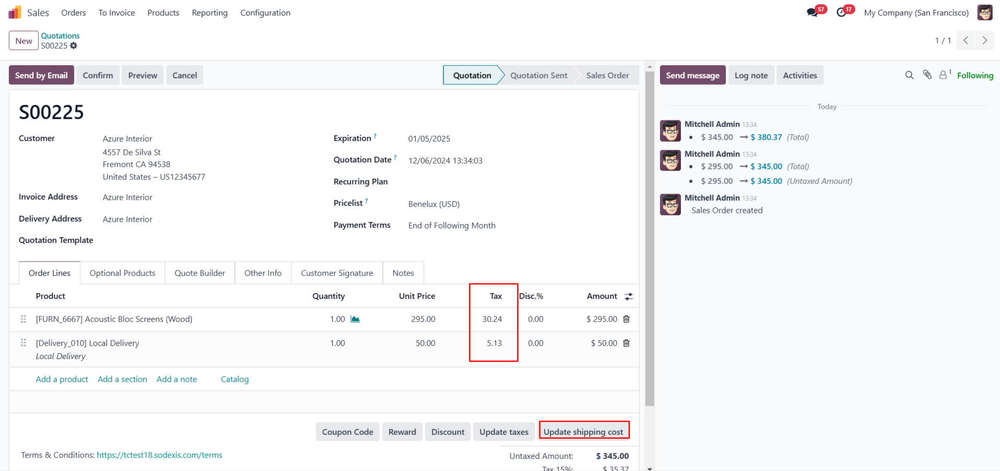
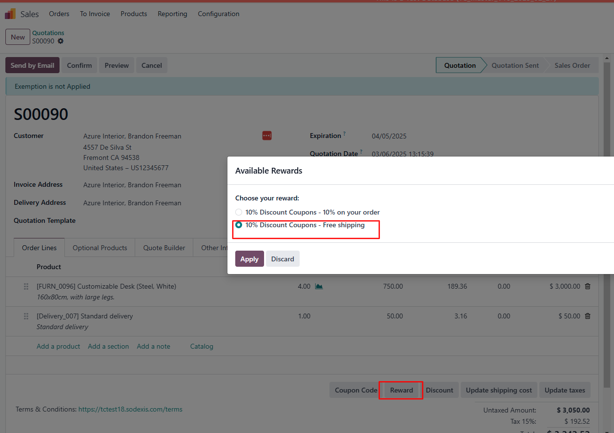
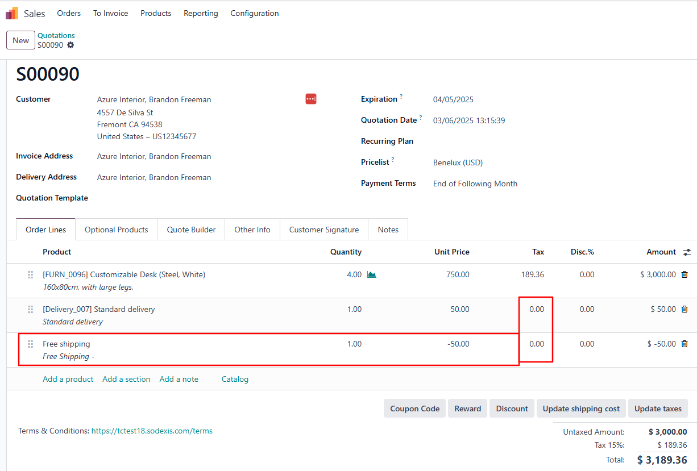
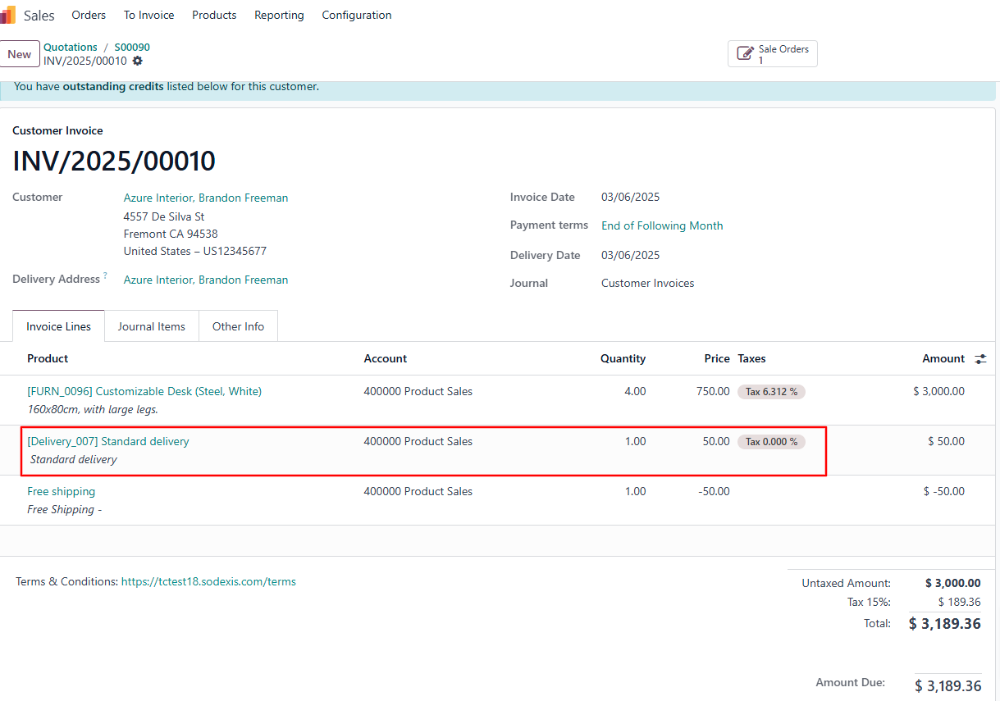
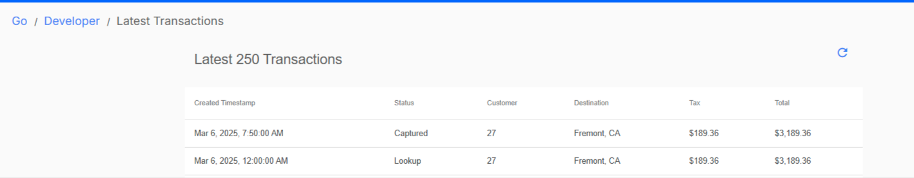

Account TaxCloud - Sale (loyalty) - Delivery
Description
This module integrates Odoo with TaxCloud, enabling the automatic computation of
sales tax on invoices within the Odoo platform. From Odoo 17, new installations are
prohibited, and from Odoo 18, the TaxCloud module(s) won’t exist at all. This module allows it to be installed as if it were officially supported by
TaxCloud.
This module is configured to manage discounts in TaxCloud computations with
delivery and follows the same logic as "Account
TaxCloud - Sale (coupon)". There is an added option
for a discount (free shipping) on deliveries. With Sale coupon delivery, the discount computation does not apply on delivery lines. It is compatible with multi-company
environments.
Module Installation
- Users must download all the official TaxCloud modules listed below
from the Odoo Apps Store before proceeding with the installation process, even if
they don’t use the related Odoo TaxCloud modules. This ensures they get all the TaxCloud features
and proper data transmission. If they use “Deploy on Odoo.sh”
in the Apps Store, they must deploy all the modules listed below.
- For example, suppose users have not installed the Subscription app
but have installed the Sales app. In that case, they are still recommended to download all the official
TaxCloud modules before installing the “Account
TaxCloud” module. The “Account
TaxCloud - Sale” modules are installed based on the installed modules
list. In the future, installing the Subscription app will automatically install the needed “TaxCloud and Subscription” module. This
ensures they do not miss any of the TaxCloud features.
- Users did not use the Odoo TaxCloud Modules:
- If users are not currently using the Odoo module, they
can install this module by simply clicking the “Activate” button and following the configuration
steps below.
- Using Odoo TaxCloud Modules:
- Switching from the Odoo TaxCloud module to our
connector in odoo V17
- If users are currently using the Odoo TaxCloud module, then they
should not uninstall the current module before
installing this module; otherwise, they will lose all of their data. This module will take care of the
configuration & data transmission from the
existing module and automatic uninstallation of the Odoo TaxCloud module once installed. It is not necessary to reinstall the Odoo TaxCloud module.
- Migrating from Odoo 17 to Odoo 18 or from Earlier
Versions to Odoo 18
- Migrating from Odoo 17 to Odoo 18
- First, switch to the official connector in Odoo 17 to
prevent data loss. Then, proceed with the migration to Odoo 18 using our connector.
- Migrating from earlier versions to Odoo 18
- First, migrate to Odoo V17 using our official connector.
Then migrate to Odoo 18 to ensure all data is retained.
- Alternatively, the module can be installed directly in
Odoo 18 as a fresh installation and configured from scratch.
For any technical queries or support, contact us at 📧taxcloud@sodexis.com or visit the website at 🌐sodexis.com/taxcloud. Free support for the installation to the first few customers will be provided.
Configuration
The technical and functional configurations are detailed in the “Account
TaxCloud” document. Please refer to the documentation for any questions regarding TaxCloud.
Functionality
Navigate to the Sales app and
create a sales order.
Click “Update Shipping Cost” to add the shipping to the sale order line.
When the coupon code is not applied, it computes taxes for both the product and the
shipping as shown below.

When the coupon code is applied, the module computes tax only
for the product, excluding the shipping cost.


It can also be seen that the computed tax for the product is in the invoice.

On the TaxCloud website, under the Transactions, select Reports, which shows the recent transactions in Odoo.
The status of the sales order can be seen as “Lookup” and the Invoice as “Captured” with the computed taxes as shown
below.

Document Version: 1.0
Credits
Contributors
For additional information or inquiries regarding TaxCloud, feel free to reach out to
us at
Sodexis <📧taxcloud@sodexis.com> or visit our
website at <🌐sodexis.com/taxcloud>
This module is maintained by Sodexis.